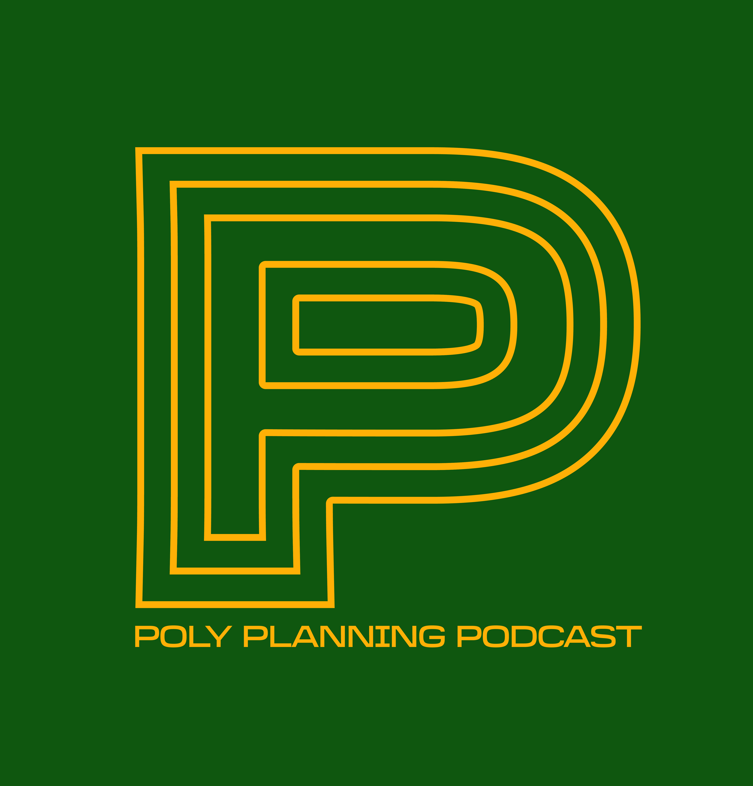

Scrutinize · Speculate · Spatialize
Planning a more just future.
Learning by podcasting. A repository for planners’ ideas and actions in pursuit of social-spatial justice. Planner interviews by MURP students.
URPENVCPP

Scrutinize · Speculate · Spatialize
Learning by podcasting. A repository for planners’ ideas and actions in pursuit of social-spatial justice. Planner interviews by MURP students.
